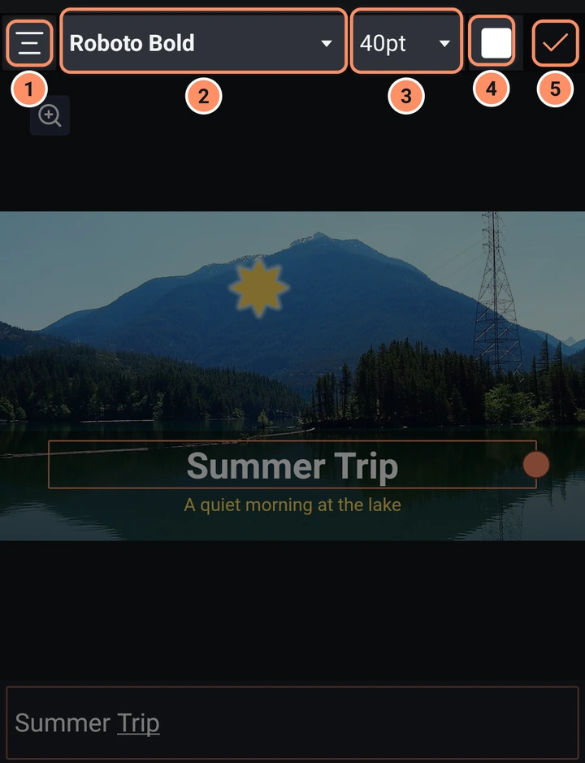

Text und Schriftarten
Text hinzufügen und gestalten, aus 150 Schriftarten wählen, Buchstaben mit einem Bild füllen, Text animieren, ihm Sprechgeräusche geben und Untertitel erstellen.
Text hinzufügen
Tippe auf die Schaltfläche + und dann auf Text. Eine Textebene wird in der Mitte der Arbeitsfläche hinzugefügt (grau, Roboto Regular, 18 pt, linksbündig), und der Vollbild-Texteditor öffnet sich sofort.
Oben im Editor:
- Ausrichtung wechselt zwischen linksbündig, zentriert, rechtsbündig und Blocksatz.
- Der Schriftartname (in seinem eigenen Stil angezeigt) öffnet einen Streifen mit deinen zuletzt verwendeten Schriftarten, deinen Favoriten und Alle Schriftarten anzeigen.
- Die Größenschaltfläche (zum Beispiel „18pt“) öffnet einen Regler mit 25 Größen von 5 bis 144 pt.
- Das Farbfeld öffnet die Farbauswahl mit der Pipette.
- Das Häkchen (Fertig) schließt den Editor.

Darunter befinden sich die Vorschau und dann das Textfeld, das „Gib hier deinen Text ein.“ anzeigt, bis du etwas tippst. Ziehe den runden Griff am Rand des Textrahmens in der Vorschau, um die Breite zu ändern, bei der die Zeilen umbrechen. Der Name einer Textebene ist ihr Text, bis du sie umbenennst.
Um den Text später zu bearbeiten, wähle die Ebene aus und tippe auf Text bearbeiten.
Text gestalten
Die anderen Werkzeuge funktionieren bei Text wie bei jeder anderen Ebene.
- Füllung & Farbe gibt den Buchstaben eine Farbe, einen Verlauf oder ein Bild oder Video (Medien).
- Rahmen & Schatten: Kontur ist der Umriss der Buchstaben. Rahmen und Schatten fügen weitere hinzu.
- Deckkraft, Transformieren und Effekte funktionieren wie bei Formen.
- In Kontur umwandeln (Ebenenmenü) macht aus dem Text eine Form, die du Punkt für Punkt bearbeiten kannst. Sie lässt sich nicht wieder in Text zurückverwandeln.
Emojis folgen der Einstellung Emoji-Stil: den Emojis deines Telefons oder dem Satz, der mit der App kommt. Siehe Einstellungen.
Schriftarten
Der Katalog hat 150 Schriftfamilien. 50 davon sind in der App eingebaut. Die anderen 100 werden von Google Fonts heruntergeladen, wenn du sie zum ersten Mal auswählst (sie zeigen ein Wolkensymbol und „Wird bei Auswahl heruntergeladen“; der Download braucht eine Internetverbindung). Ein Projekt, das Schriftarten verwendet, die du nicht hast, zeigt beim Öffnen Schriftarten fehlen auf diesem Handy. Der Text verwendet so lange eine andere Schriftart, bis du sie herunterlädst.
Der Schriftarten-Browser
Alle Schriftarten anzeigen öffnet ein Raster mit Schriftarten, jede mit einer Probe. Oben befindet sich eine Menüschaltfläche, die eine Schublade mit diesen Filtern öffnet:
- Kategorien: Serif, Sans Serif, Display, Handschrift, Monospace, Favoriten und Importiert.
- Sortierung: Beliebt oder Alphabetisch.
- Sprachen: Alle Sprachen oder eine von sechzehn Schriftsystemen, etwa Arabisch, Kyrillisch, Griechisch, Hebräisch, Japanisch, Koreanisch, Chinesisch, Thai, Vietnamesisch und Latein.
- Schriftarten importieren.
Das Suchfeld oben trägt die Bezeichnung „Hier tippen zum Suchen“. Der Stern bei einer Schriftart markiert sie als Favorit.
Eigene Schriftarten
Schriftarten importieren lässt dich Schriftdateien von deinem Telefon auswählen. Wenn eine Datei nicht verwendet werden kann, zeigt eine Liste, welche fehlgeschlagen sind. Halte eine importierte Schriftart gedrückt, um sie zu entfernen.
Text animieren
Die Effekte der Kategorie Text animieren Text Buchstabe für Buchstabe.
- Textfortschritt blendet den Text nach Zeichen, Wort oder Zeile ein (Schreibmaschine und Einblenden nach Wort sind Voreinstellungen).
- Text transformieren bewegt, dreht, skaliert und blendet jeden Buchstaben nacheinander (Voreinstellungen: Wave und Spin Cascade).
- Text-Randomizer verwürfelt Buchstaben, bevor sie sich setzen (Voreinstellung: Scramble).
- Text-Wackeln schüttelt jeden Buchstaben einzeln, wie nervöse Dialoge in einem Spiel: Schütteln, Zittern, Welle, Kreis oder Wackeln. Senke Letters Shaking, um nur einige Buchstaben zu schütteln, die alle paar Augenblicke neu gewählt werden (Voreinstellungen: Nervous, Scared, Uneasy, Floaty, Wavy, Dizzy, Wobbly).
- Text-Blips tippt den Text Zeichen für Zeichen aus und spielt für jeden Buchstaben einen kurzen Ton, wie eine Figur, die in einem Spiel spricht. Wähle eine von acht Stimmen, ihre Tonhöhe und wie schnell getippt wird. Leerzeichen und Satzzeichen bleiben still, nach Satzzeichen gibt es eine kurze Pause. Die Töne spielen in der Vorschau und im Export ab (Voreinstellungen: Hero, Monster, Robot, Fast Talker, Typewriter).
- Schriftstärke macht die Buchstaben dünner oder fetter und kann animiert werden. Es funktioniert mit variablen Schriftarten: Raleway, Quicksand, Comfortaa, Lora, Bitter, Orbitron, Playfair Display und Dancing Script oder eine variable Schriftart, die du importierst.
- Hoch-/runterzählen und Timecode machen Text zu einem Zähler oder einer Uhr.
- Text entlang Pfad setzt den Text auf einen Bogen, einen Kreis oder die Form direkt darunter. Animiere Position, damit er den Pfad entlanggleitet.
Wie du sie hinzufügst, steht unter Effekte verwenden. Alle Einstellungen findest du in der Effektbibliothek.
ASCII in den Stilisieren-Effekten funktioniert umgekehrt: Es macht aus jeder Ebene, etwa einem Video, Textkunst aus Buchstaben und Symbolen.
Untertitel
Automatische Untertitel hört die Sprache in einem Video oder Ton ab und erstellt pro Untertitel eine Textebene, auf dem Telefon und offline. Siehe KI-Werkzeuge.